Installing R & RStudio
1 Objective
- Download, install, and set up R and RStudio on your local machine
2 R (a quick background)
When people decide to begin using R, it can be confusing to know where to start. Googling “how can I learn R?” will return a lot of results, but it can quickly feel like you’re drinking water from a fire-hose. Like most things, knowing the correct terminology can help you sift through the resources to find what you’re looking for.
We’re going to clear up some of the terms and definitions so the R programming landscape is a little less overwhelming:
- R - an open-source software programming language for statistical analysis and graphics (compared to proprietary software like SPSS or SAS)
- the R console - a command line interface for entering and executing R code.
- .R script files - plain text files containing R code that computers can run.
- RStudio - an Integrated Development Environment, or IDE for writing R code, connecting to databases, building graphics, websites, software packages, and applications.
3 Installation
Depending on what kind of computer you have, these instructions will be a little different. The two sections below describe how to install R and RStudio on Mac and Windows machines. An alternative to downloading and installing R and RStudio is using RStudio.Cloud, which operates entirely in your browser. You’ll need to sign up for a free RStudio.Cloud account using a Github account (also free!).
3.1 Installing R on Mac
These steps cover how to install R and RStudio on a Mac. The technical details on the operating system and machine are listed below,
MacBook Pro (13-inch, 2017, Four Thunderbolt 3 Ports)
macOS Big Sur
Version: 11.2.3 (20D91)
Model Name: MacBook Pro
Model Identifier: MacBookPro14,2
Graphics: Intel Iris Plus Graphics 650 1536 MB
Processor Name: Dual-Core Intel Core i5
Processor Speed: 3.1 GHz
Number of Processors: 1
Total Number of Cores: 2
L2 Cache (per Core): 256 KB
L3 Cache: 4 MB
Hyper-Threading Technology: Enabled
Memory: 16 GB
System Firmware Version: 429.80.1.0.0
SMC Version (system): 2.44f63.1.1 Download R
Navigate to CRAN, the The Comprehensive R Archive Network.

Click on the Download R for (Mac) OS X.

Download the R package:
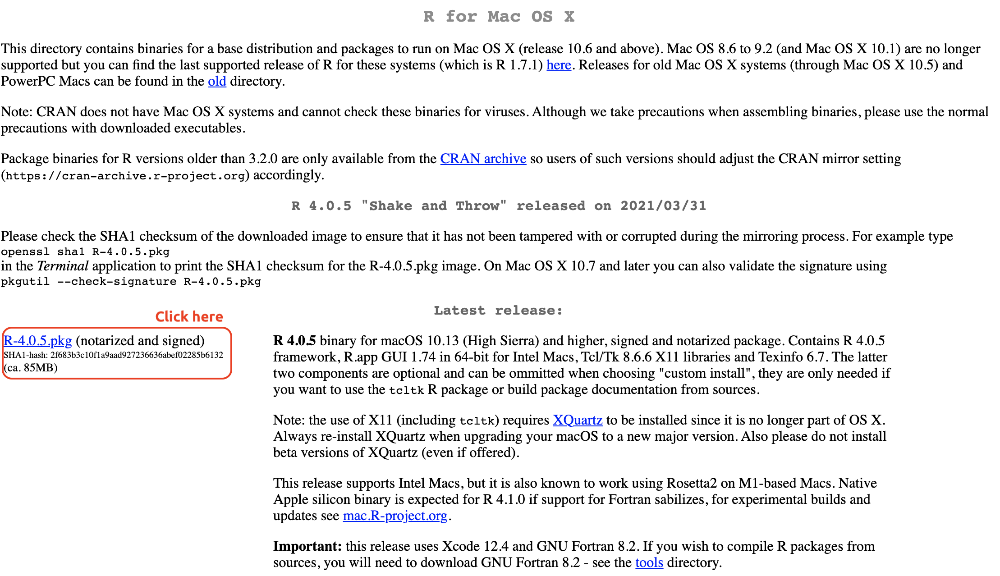
Download the R installer package into your Applications folder.
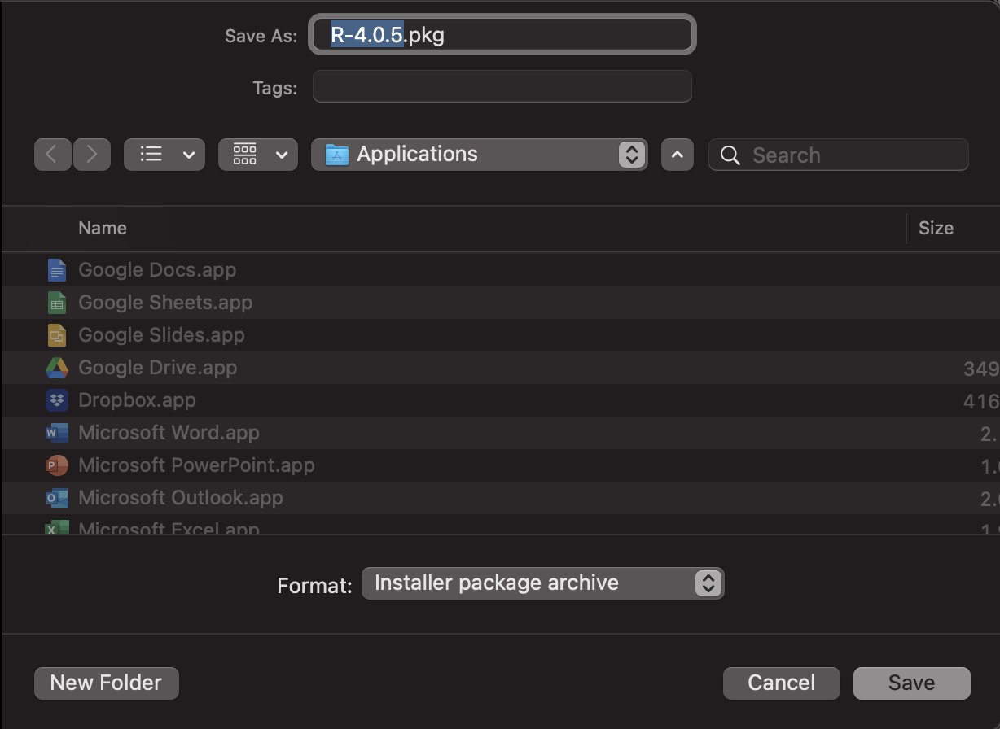
3.1.2 Download RStudio
Navigate to RStudio downloads for Macs
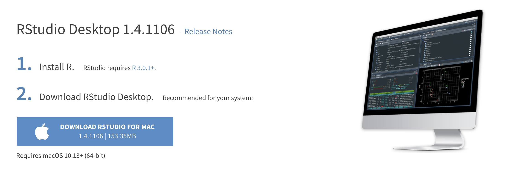
Download the RStudio .dmg into your Applications folder.

3.1.3 Install Xcode
You’ll need to install Xcode to compile R packages, which you can find in the Mac App Store.

Open the App Store on your local machine and click on the ‘Develop’ tab. Click on the ‘Get’ icon (mine says ‘open’ because I already Xcode installed).
Follow the instructions to install Xcode just like you would any other application on your Mac.
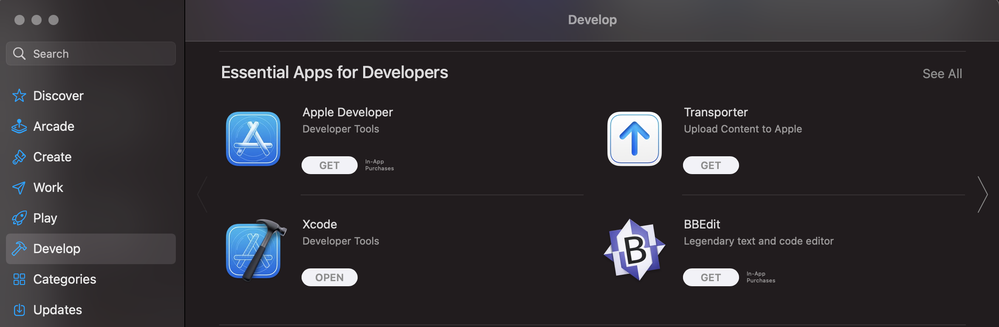
3.1.4 Install R
Open your Applications folder and click on the R package installer.

This will open the installer package, click on ‘Continue’ until you’re asked to ‘Agree’
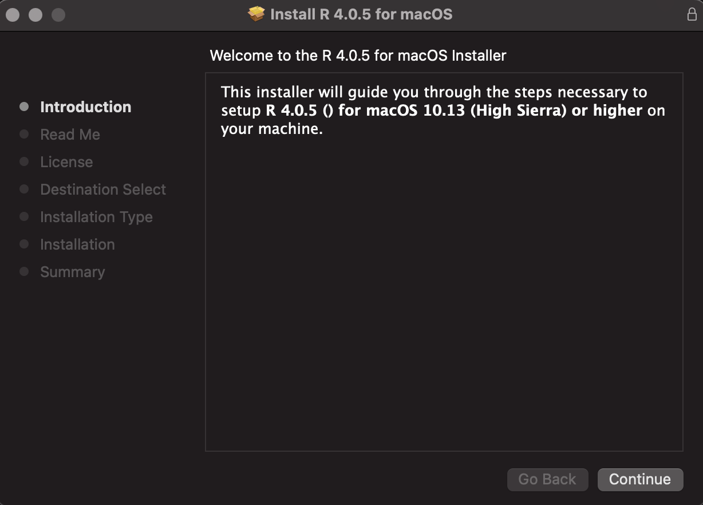
Click ‘Agree’

All the package installer to install R on your machine.
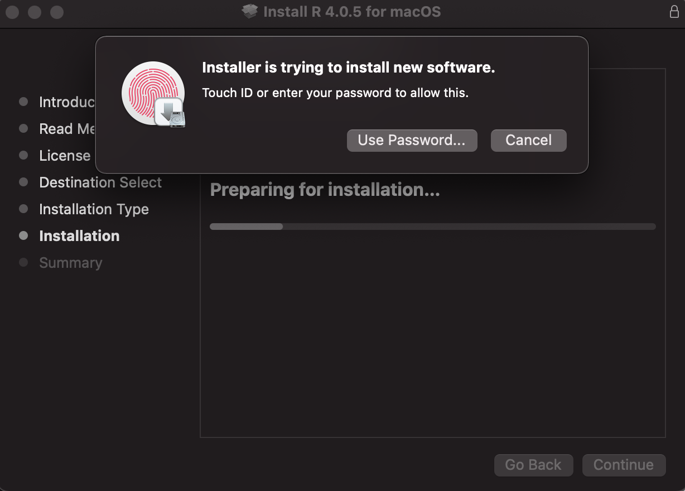
Wait for R to finishing installing…

Click ‘Close’ when the application is installed.
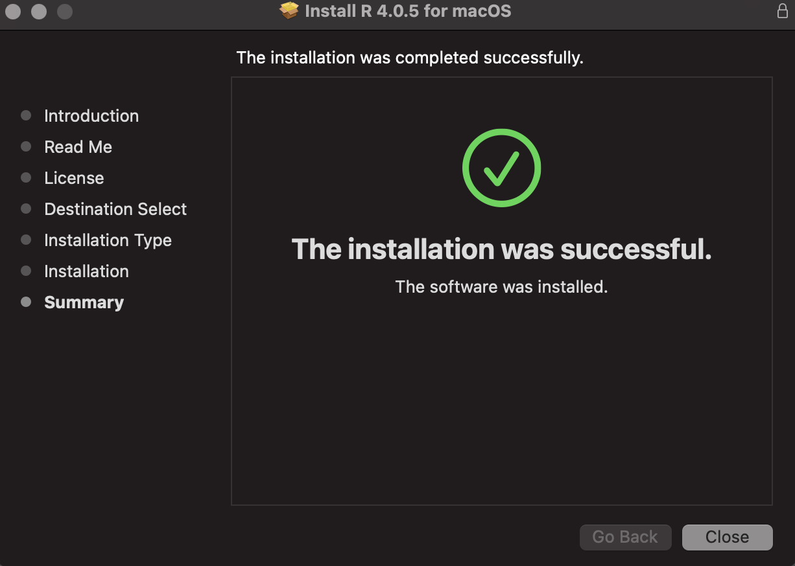
3.1.5 Install RStudio
Open your Applications folder and click on the RStudio .dmg installer.

Drag and drop the ‘RStudio.app’ icon into the ‘Applications’ folder.

Wait for the application to finishing copying…

Double-click on the new ‘RStudio.App’ icon.
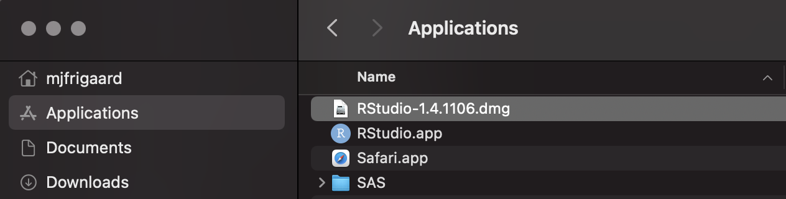
We’re sure–click ‘Open’

Take a look at the RStudio IDE!

3.2 Installing R on Windows
These steps cover how to install R and RStudio on a Windows machine. The technical details on the operating system and machine are listed below.

3.2.4 Install R
The steps below outline installing R version 4.1.0 on Windows. The installation steps might look sightly different on your machine. Ask me if you get stuck.


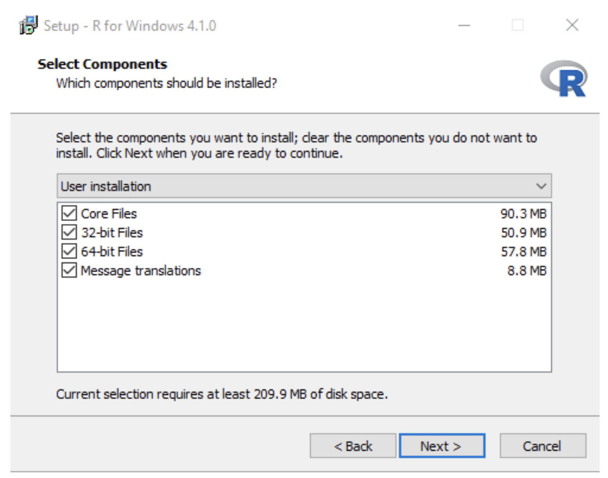

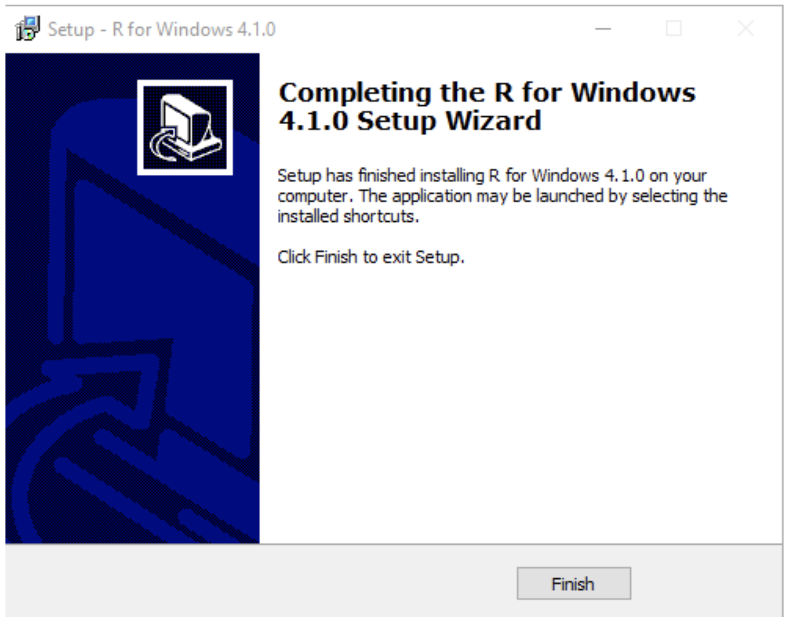
3.2.5 Install Rtools
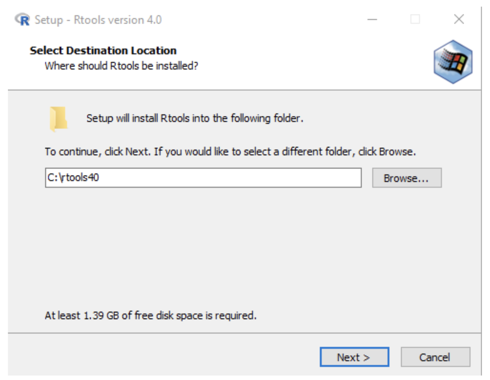